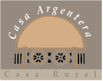

synthesizedT-scale
Type scale is ad-hoc
50 → 30 → 22 → 17 → 14 px (ratios 1.667, 1.364, 1.294, 1.214), no consistent ratio. Direct will need to decide whether the target adopts a modular scale.

Casa Argentera · WELCOME HOME
Casa Argentera, a country house holiday rental, is located in an tiny village, between The Priorat & The Mediterranean. Up to 15 people. Get to know it!
https://www.casaargentera.com · WordPress + The7 theme + WPBakery + Revolution Slider + Contact Form 7
9 captured URLs redirect to another locale’s page (tagged below); /da/home/ loops and was not captured. Source: _crawl-log.json § crawl, visionCheck; state.json.

/landing
/es/el-entorno/article
/es/naturaleza-deporte/article
/es/playas-y-mas/article
/es/quienes-somos/article
/es/el-atico/program
/es/el-jardin/program
/es/el-piso-senorial/program
/es/eventos/events
/es/cultura/article
/es/la-casa-entera/program
/es/la-casa/article
/es/la-planta-baja/program
/es/experiencias/listing
/es/contacto/form
/es/inicio/landing
/es/reservas/booking
/ca/cultura/articleredirects
/ca/politica-de-privacidad-y-cookies/static
/ca/covid-19/staticredirects
/ca/platja-i-mes/article
/ca/qui-som/article
/ca/politica-de-privacitat-i-cookies/static
/ca/contacte/form
/ca/el-jardi/program
/ca/esdeveniments/events
/ca/la-casa/articleredirects
/ca/la-casa-sencera/program
/ca/latic/program
/ca/el-pis-senyorial/program
/ca/la-planta-baixa/program
/ca/lentorn/article
/ca/experiencies/listing
/ca/natura-esport/article
/ca/inici/landing
/ca/reserves/booking
/who-we-are/article
/nature-sport/article
/the-place/article
/covid-19/static
/privacy-policy-and-cookies/static
/beach-and-more/article
/events/events
/contact/form
/culture/article
/the-whole-house/program
/the-house/article
/the-garden/program
/the-penthouse/program
/the-noble-floor/program
/the-ground-floor/program
/experiences/listing
/reservations-2/booking
/da/covid-19/staticredirects
/da/natur-sport/article
/da/who-we-are/articleredirects
/da/stedet/article
/da/strand-m-m/article
/da/oplevelser/listing
/da/privacy-policy-and-cookies/staticredirects
/da/stueetagen/program
/da/penthousekvisten/program
/da/eventsda/events
/da/the-garden/programredirects
/da/hele-huset/program
/da/the-noble-floor/programredirects
/da/kontakt/form
/da/kulturen/article
/da/the-house/articleredirects
/da/reservations/bookingSource: assets/screenshots/<slug>.png, state.json § pages[].type
#ffffff#dd9d3b#3a3a3a#2b2b2b#dd993380#ddbd89#f0f3f6#adb0b64dSource: _brand-extraction.json § palette (from _computed-styles.json § aggregate.colors)
H2 · Montserrat 200 / 50px / 55pxH3 · Montserrat 200 / 30px / 35pxH4 · Montserrat 200 / 22px / 30pxH5 · Montserrat 400 / 17px / 27px / uppercaseBODY · Montserrat 400 / 14px / 25pxA place where time stands still, and unique traditions stays alive. Situated in a valley, in a tiny authentic Catalan village with cobblestone streets lined with ever blooming flowers and a majestic view of the castle of Escornalbou. A place where your story begins.
BUTTON · Montserrat 800 / 14pxSendNo visible h1 on any page. Source: _brand-extraction.json § type
| Label | Total | Pages |
|---|---|---|
| Instagram page opens in new window | 210 | 70 |
| Facebook page opens in new window | 210 | 70 |
| Dansk | 128 | 70 |
| Català | 124 | 70 |
| Español | 115 | 70 |
| English | 114 | 70 |
| EVENTS | 72 | 36 |
| www.CasaArgentera.com | 70 | 70 |
Source: _brand-extraction.json § voice, voiceTable
50 → 30 → 22 → 17 → 14 px (ratios 1.667, 1.364, 1.294, 1.214), no consistent ratio. Direct will need to decide whether the target adopts a modular scale.
Only the desktop PNG badge (172×136, source: img) was captured; it doubles as the favicon. A 75px mobile JPG exists; no SVG / monochrome / inverted set. Direct should plan a variant set.
Never as text / border. Direct will need to decide: drop, expand, or keep as accent.
Never as text / border. Direct will need to decide: drop, expand, or keep as accent.
Never as text / border. Direct will need to decide: drop, expand, or keep as accent.
#dd9d3b on #ffffff (headings, links) and #ffffff on #dd9d3b (footer text, buttons) = 2.34:1 — below AA even for large text (3:1). Body #3a3a3a on #fff = 11.37:1 passes.
All 70 records start at h2; the theme declares a 60px h1 that is never rendered. Direct will need to decide the page-title heading level for the replica (SEO/a11y).
Masthead band is rgba(221,153,51,.5) on 41 measured pages, rgba(221,179,110,.5) on 16 and rgba(221,185,51,.5) on 4 (ground-floor group). Inconsistency-register candidate.
COVID-19 page prints a raw [ultimate_heading …] shortcode; home links use legacy /wp/… paths; reservations calendar DOM exposes Airbnb reservation URLs and phone digits.
200px688× · 60px circular amenity icon chips (icon-with-text)50%546× · slider bullets, footer social icons100px366× · top-bar social icons500px233× · header/hero decorative circles25px182× · buttons (Send, Go!) and the footer search field2px122× · reCAPTCHA badge (third-party)3px1× · slider loadershadow: noneflat site-wide; only reCAPTCHA badge carries a shadowSource: _brand-extraction.json § motifs
Source: DESIGN.json § extensions.modules (status: candidate), _brand-extraction.json § motifs.patterns
Cross-promo: not detected (anchor "For additional information and reservations?" (6 pages) has no co-occurring cluster ≥ 0.6 overlap — no cross-promo block. The repeated closer is the enquiry form (systemComponents enquiry-cta-band), whose heading is localized and reworded per page.). Source: _brand-extraction.json § systemComponents, crossPromo
header.header-bar .branding a > img.preload-me:not(.mobile-logo)Base unit: none detected (WPBakery spacer elements, typically 20px). Declared content width 1250px (--the7-content-width; --the7-box-width 1280px) — declared, not measured; cap-probe owns the measured value.
20px spacer · 25px button radius · 30px top-bar/logo inset · 60px header/footer side padding
Source: _brand-extraction.json § spacing, motifs.borderRadius